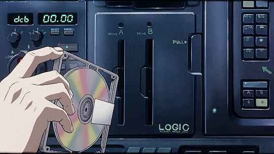

Mi MOOD
En este apartado vas a encontrar los diferentes tipos de musica que suelo escuchar dependiendo del tipo de juego que este jugando.

En este apartado vas a encontrar los diferentes tipos de musica que suelo escuchar dependiendo del tipo de juego que este jugando.
